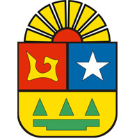

La historia de Quintana Roo, como estado, comienza en 1902 cuando se crea el Territorio Federal de Quintana Roo; sin embargo, para una mayor comprensión de los procesos históricos que llevaron a la constitución de Quintana Roo como un territorio independiente es preciso referenciar algunos de los principales capítulos de su existencia. La región que ahora ocupa Quintana Roo fue poblada por el antiguo pueblo maya. En la actualidad sobreviven algunos grupos étnicos y existen múltiples yacimientos arqueológicos que dan muestra de la concentración demográfica que la zona tuvo en el pasado, entre los que destacan Chacchobén, Chakanbakán, Chamax, Cobá, Dzibanché, Ichpaatán, Kohunlich, Muyil, Oxtankah, Tankah, Tulum, Tupak, Xel-Há y Xcaret. A fines del siglo XIX, Yucatán carecía de medios para someter a los mayas rebeldes, de la parte oriental de la península. El presidente Porfirio Díaz buscaba el control económico y político de la frontera con Belice y la explotación de estas ricas tierras en recursos naturales y forestales. El 24 de noviembre de 1902 se creó el Territorio Federal de Quintana Roo con una extensión de 50.000 km². Pocos años después, fue nombrado el general de división José María de la Vega primer jefe político de Quintana Roo ejerciendo su función desde el Campamento General Vega, que funcionó en los hechos como capital del naciente territorio. Durante la administración de José María de la Vega, se optó por una división en tres distritos de acuerdo con su situación geográfica: norte, centro y sur. De 1903 a 1911 el general Ignacio A. Bravo se desempeñó como jefe político del territorio. Por esos tiempos la región se caracterizó por el creciente arribo de presos políticos y opositores al régimen a la colonia penal llamada “Cuerpo de Operarios”. Entre abril y mayo de 1903 se llevaron a cabo las primeras elecciones en el Territorio de Quintana Roo para conformar los ayuntamientos en Payo Obispo, Bacalar, Xcalac, Campamento General Vega e Isla Mujeres; en Cozumel se instaló una junta municipal. El 27 de febrero de 1904 se publicó en el Diario Oficial de la Federación la Ley de Organización Política y Municipal del Territorio Federal de Quintana Roo en la que se especificaba que la capital del Territorio sería Santa Cruz de Bravo. Quintana Roo posee un mosaico cultural, con sus expresiones más añejas basadas en las tradiciones indígenas de los mayas peninsulares, entrelazados con las costumbres colonialistas españolas e influencias culturales de otros pueblos del Caribe como Belice y Cuba. Los eventos más distintivos del acervo cultural del estado se concentran sobre todo en el centro-sur del estado y en la isla de Cozumel. Quintana Roo Predomina el clima tropical con lluvias en verano, excepto en el suroeste y el sureste, donde predomina una temperatura tropical con intensas lluvias periódicas en invierno seco en las comarcas del norte. En síntesis el clima mayoritario en las regiones centro y este, es el tropical, con lluvias en otoño. Al oeste también es tropical, pero con lluvias intensas en verano. Al norte, el clima es de sabana con lluvias periódicas e invierno seco. La temperatura media anual en el estado es de 26 °C. La época de secas comprende de febrero a mayo, y la de lluvias de mayo a octubre, aunque con frecuencia se prolonga hasta enero, en forma de chubascos procedentes del norte. La flora Varía de acuerdo con el clima, de selva baja a selva alta. La riqueza silvícola es una de las fuentes de ingreso del estado, ya que la entidad produce maderas preciosas de óptima calidad como son: caoba, cedro rojo, primavera, palo rosa y roble; estas especies constituyen dos terceras partes de la superficie arbolada del estado. Otras especies menores son: el ébano, el huizache y el huanacaxtle. De las especies no maderables, la más importante es el chicozapote, árbol del que se extrae la resina para fabricar el chicle, el cual es exportado en su totalidad. Peces: sardinita o topote, potetes o molis, bandera, bolines, mero, pargo, mojarra, lisa y huachinango. Anfibios: mano de metate, rana y sapo. Reptiles: pochitoque, jicotea, cocodrilo, iguana, iguana rayada, pasarríos, lagartija, boa, petatillo, culebra ratonera, cordelillo, bejuquillo, víbora chirrionera, nauyaca, víbora de cascabel y cantil. Aves: garza morena, garza blanca, pedretes, espátulas, íbises, flamenco, pato golondrino, cerceta de alas azules, pato boludo, pato colorado, pijije, gallareta, zopilote cabeza colorada, zopilote real, águila pescadora, faisán negro, guan cornudo, chachalacas, cut o pavo de monte, gallitos de agua, chorlitos, paloma, búho gran duque, lechuza de campanario, chotacabras, cuerpouines, garrapateros, cuclillos, correcaminos, Martín pescador, tijeretas, tucán, pico real, pájaro carpintero, trepatroncos, chompipis, pitivirrín colorado, golondrina, verdín, calandria y dominiquito. Mamíferos: tlacuache, comadreja, caballo, ratón tlacuache, murciélagos (zapatero, siricotero, vampiro, guanero, pescador), mono araña, armadillo, oso hormiguero, ardilla, tuza, ratón arrocero, rata jabalina, tepezcuintle, tuza real, conejo, jaguar, ocelote, tigrillo, puma, onza o leoncillo, zorra, mico de noche, mapache, coatí, martucha, zorrillo, nutria, tapir, jabalí (pecarí), venado cola blanca y temazate. Entre las principales actividades económicas del Estado sobresale el turismo, el cual se concentra en el balneario y las playas de Cancún, uno de los centros turísticos más visitados del mundo, y en la Riviera Maya costera, que abarca desde Puerto Morelos hasta Tulum y la isla de Cozumel, la cual cuenta con diversos arrecifes para bucear, teniendo como ciudad principal a Playa del Carmen. A 6 kilómetros al sur de Playa del Carmen se encuentra Xcaret, un yacimiento arqueológico maya y parque temático ecológico, donde se pueden practicar diversas actividades acuáticas y conocer la cultura, flora y fauna de la región.
